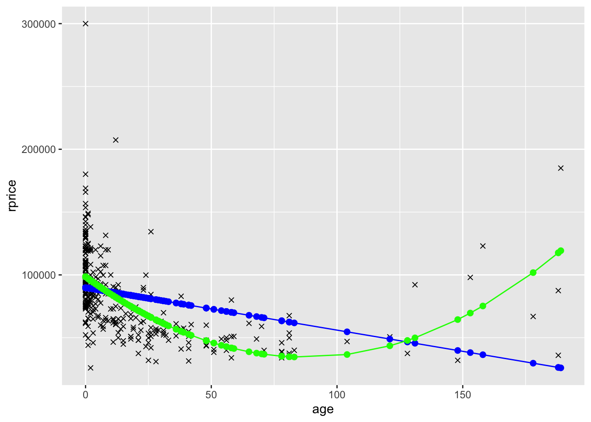
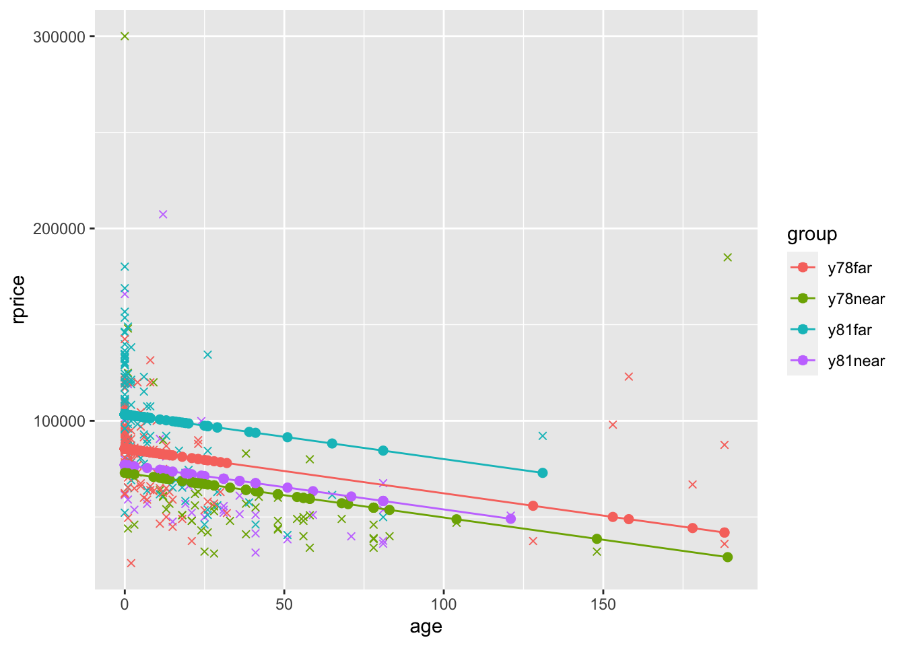
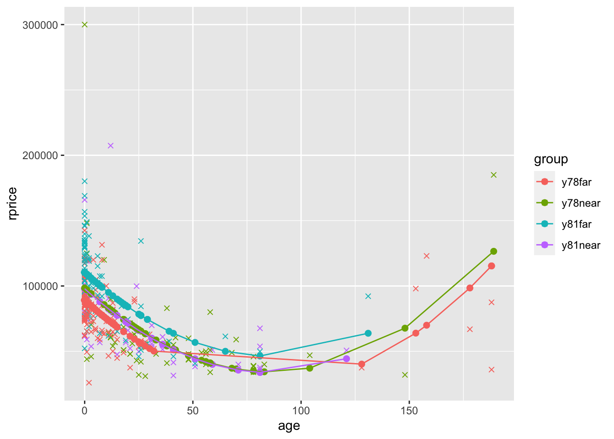

18 Difference-in-Differences
In this chapter you will estimate the Garbage Incinerator Difference-In-Differences model discussed in LN6. You can also gain experience working with models that include polynomials.
Solutions are posted in Moodle.
library(tidyverse)
library(pander)
library(stargazer)
## Set how many decimals at which R starts to use scientific notation
options(scipen=4)
mydata <- read_csv("https://raw.githubusercontent.com/econ380w21/380data/main/garbageIncineratorDD.csv")18.1 Data
The data has 321 observations on house prices in North Andover, MA. The variables include:
| Variable | Description |
|---|---|
| year | 1978 or 1981 |
| dist | miles from incinerator |
| rprice | price, 1978 dollars (“r” means real price, corrected for inflation) |
| age | age of house in years |
| rooms | # rooms in house |
| baths | # bathrooms |
| area | house size in square feet |
| land | land area in square feet |
The relevant background is covered in LN6, but I’ll summarize it again. We have house prices in 1978 and 1981 in North Andover, MA. In 1978 no one knows about any garbage incinerator, so prices in 1978 cannot be affected by the garbage incinerator. In 1979 it was announced publicly that a new garbage incinerator would be built and operational by 1981. The variable “dist” has the distance in miles from the future location of the incinerator. We want to estimate if knowledge of the future incinerator lowered house prices for houses near the incinerator. We’ll define “near” as within 3 miles of the incinerator location.
stargazer(as.data.frame(mydata), type = "html",summary.stat = c("n","mean","sd", "min", "median", "max"))| Statistic | N | Mean | St. Dev. | Min | Median | Max |
| year | 321 | 1,979.327 | 1.492 | 1,978 | 1,978 | 1,981 |
| dist | 321 | 3.923 | 1.611 | 0.947 | 3.769 | 7.576 |
| rprice | 321 | 83,721.350 | 33,118.790 | 26,000.000 | 82,000.000 | 300,000.000 |
| age | 321 | 18.009 | 32.566 | 0 | 4 | 189 |
| rooms | 321 | 6.586 | 0.901 | 4 | 7 | 10 |
| baths | 321 | 2.340 | 0.771 | 1 | 2 | 4 |
| area | 321 | 2,106.729 | 694.958 | 735 | 2,056 | 5,136 |
| land | 321 | 39,629.890 | 39,514.390 | 1,710 | 43,560 | 544,500 |
Note that I put mydata inside as.data.frame(). Sometimes stargazer doesn’t work otherwise (as some of you found out in the CP).
18.2 Model 1
Estimate the following model and store the results in model1
\[rprice=\beta_0+\beta_1near+\beta_2y81+\beta_3near\cdot y81+u\] where
| Variable | Description |
|---|---|
| near | =1 if house is 3 miles or less from incinerator location, = 0 o/w |
| y81 | =1 if house sold in 1981, = 0 o/w |
Fill in your code here. You need to generate the near and y81 variables a variable for the interaction term (i.e., y81near=y81*near).
Tip about creating dummy variables: If you use something like dist<=3 to create near, it will create a column of TRUE and FALSE. If you put the condition in parentheses and multiply by 1, it will turn TRUE into 1 and FALSE into 0. Thus, (dist<=3)*1 is equivalent to ifelse(dist<=3,1,0).
Tip (or, more of a requirement for 380) about interaction terms: R will let you include y81*near in the regression directly, but do not do this in 380 (and I suggest not doing it after 380 either, at least unless you check to make sure it’s doing what you think it’s doing). Frequently people make mistakes when they rely on R to include the interactions for them. To be sure that you know what the interaction terms are, you need to create them yourself. So create the interaction term yourself. You can name it y81near.
After you create the three variables, estimate the regression, store the regression results in model1, and display the results using pander.
Then, use group_by() and summarize to calculate the mean price for the four groups (far 1978, far 1981, near 1978, near 1981)
Finally, display the combinations of regression coefficients that equal the four group averages. These should match with the values shown and discussed in the LN6 slides.
## Create Variables
mydata <- mydata %>% mutate(near = (dist <=3) * 1,
y81 = (year == 1981) * 1,
y81near = y81 * near)
## Estimate model
model1 <- lm(rprice~near+y81+y81near,data=mydata)
pander(summary(model1))| Estimate | Std. Error | t value | Pr(>|t|) | |
|---|---|---|---|---|
| (Intercept) | 82517 | 2727 | 30.26 | 1.709e-95 |
| near | -18824 | 4875 | -3.861 | 0.0001368 |
| y81 | 18790 | 4050 | 4.64 | 0.000005117 |
| y81near | -11864 | 7457 | -1.591 | 0.1126 |
| Observations | Residual Std. Error | \(R^2\) | Adjusted \(R^2\) |
|---|---|---|---|
| 321 | 30243 | 0.1739 | 0.1661 |
## 4 group averages using group_by() and summarize()
mydata %>%
group_by(near,y81) %>%
summarize(priceAvg=mean(rprice))## # A tibble: 4 × 3
## # Groups: near [2]
## near y81 priceAvg
## <dbl> <dbl> <dbl>
## 1 0 0 82517.
## 2 0 1 101308.
## 3 1 0 63693.
## 4 1 1 70619.## far 1978
coef(model1)["(Intercept)"]## (Intercept)
## 82517.23## far 1981
coef(model1)["(Intercept)"]+coef(model1)["y81"]## (Intercept)
## 101307.5## near 1978
coef(model1)["(Intercept)"]+coef(model1)["near"]## (Intercept)
## 63692.86## near 1981
coef(model1)["(Intercept)"]+coef(model1)["near"]+coef(model1)["y81"]+coef(model1)["y81near"]## (Intercept)
## 70619.2418.2.1 Equivalent model 1
In LN6 we discuss an equivalent model that defines dummy variables for each group. Create the set of group dummy variables and estimate the model. Stote it in model1equiv. Calculate the conditional expectation for the four groups and show that each is the same as in the version of model 1 estimated above.
## Write your code here
## Create Variables
mydata <- mydata %>% mutate(y78near = (1-y81)*near,
y81far = y81 * (1-near))
## we already created y81near above
## Estimate model
model1equiv <- lm(rprice~y78near+y81near+y81far,data=mydata)
pander(summary(model1equiv))| Estimate | Std. Error | t value | Pr(>|t|) | |
|---|---|---|---|---|
| (Intercept) | 82517 | 2727 | 30.26 | 1.709e-95 |
| y78near | -18824 | 4875 | -3.861 | 0.0001368 |
| y81near | -11898 | 5505 | -2.161 | 0.03141 |
| y81far | 18790 | 4050 | 4.64 | 0.000005117 |
| Observations | Residual Std. Error | \(R^2\) | Adjusted \(R^2\) |
|---|---|---|---|
| 321 | 30243 | 0.1739 | 0.1661 |
## display conditional expectations for each model, and subtract model1equiv estimate from model 1 to show they are o (all are within 1e-10)
## far 1978
coef(model1)["(Intercept)"]## (Intercept)
## 82517.23coef(model1equiv)["(Intercept)"]## (Intercept)
## 82517.23coef(model1)["(Intercept)"]-coef(model1equiv)["(Intercept)"]## (Intercept)
## -5.820766e-11## far 1981
coef(model1)["(Intercept)"]+coef(model1)["y81"]## (Intercept)
## 101307.5coef(model1equiv)["(Intercept)"]+coef(model1equiv)["y81far"]## (Intercept)
## 101307.5coef(model1)["(Intercept)"]+coef(model1)["y81"]-(coef(model1equiv)["(Intercept)"]+coef(model1equiv)["y81far"])## (Intercept)
## -5.820766e-11## near 1978
coef(model1)["(Intercept)"]+coef(model1)["near"]## (Intercept)
## 63692.86coef(model1equiv)["(Intercept)"]+coef(model1equiv)["y78near"]## (Intercept)
## 63692.86coef(model1)["(Intercept)"]+coef(model1)["near"]-(coef(model1equiv)["(Intercept)"]+coef(model1equiv)["y78near"])## (Intercept)
## 2.546585e-10## near 1981
coef(model1)["(Intercept)"]+coef(model1)["near"]+coef(model1)["y81"]+coef(model1)["y81near"]## (Intercept)
## 70619.24coef(model1equiv)["(Intercept)"]+coef(model1equiv)["y81near"]## (Intercept)
## 70619.24coef(model1)["(Intercept)"]+coef(model1)["near"]+coef(model1)["y81"]+coef(model1)["y81near"]-(coef(model1equiv)["(Intercept)"]+coef(model1equiv)["y81near"])## (Intercept)
## -5.820766e-1118.3 Model 2
Now estimate the following model
\[ \begin{align} rprice=\beta_0+\beta_1near+\beta_2y81+\beta_3near\cdot y81 &+\beta_4age+\beta_5age^2 + \beta_6rooms \\ &+ \beta_7baths+\beta_8area+\beta_9land+u \end{align} \]
where \(age^2\) is the variable age squared. Store your regression results in model2.
mydata$agesq <- mydata$age^2
model2 <- lm(rprice~near+y81+y81near+age+agesq+rooms+baths+area+land,data=mydata)
pander(summary(model2))| Estimate | Std. Error | t value | Pr(>|t|) | |
|---|---|---|---|---|
| (Intercept) | 2189 | 10440 | 0.2097 | 0.8341 |
| near | 9965 | 3881 | 2.568 | 0.0107 |
| y81 | 15210 | 2788 | 5.455 | 0.00000009997 |
| y81near | -15021 | 5030 | -2.986 | 0.003048 |
| age | -657.2 | 129 | -5.095 | 0.0000006063 |
| agesq | 3.083 | 0.8099 | 3.806 | 0.0001698 |
| rooms | 3281 | 1679 | 1.954 | 0.05156 |
| baths | 7489 | 2601 | 2.879 | 0.004267 |
| area | 17.83 | 2.328 | 7.658 | 2.405e-13 |
| land | 0.1156 | 0.02993 | 3.863 | 0.0001364 |
| Observations | Residual Std. Error | \(R^2\) | Adjusted \(R^2\) |
|---|---|---|---|
| 321 | 19824 | 0.6518 | 0.6417 |
Note that if you want to use \(age^2\) inside lm() instead of creating the agesq variable first, you need to put the age^2 inside I(). For example, you could do:
# model2 <- lm (rprice~near+y81+near*y81+age+I(age^2)+rooms+baths+area+land, data= mydata)
# pander(summary (example))18.4 Comparison of models
Here we display the two models in a stargazer table. First we’ll display them with the p-values. Then we’ll display them with standard errors, next with the t-statistic, and finally with the 95% confidence interval. It’s common for results to be presenting with one of these four statistics, so it’s important for you to be comfortable with each choice. I’ve included the stargazer tables for you. Just un-comment-them out (i.e., remove the hash tags…which you can do by selecting all of them and using ctrl/cmd-shift-C).
stargazer(model1, model2,
type = "html",
report=('vc*p'),
keep.stat = c("n","rsq","adj.rsq"),
notes = "p-value reported in parentheses, <em>*p<0.1;**p<0.05;***p<0.01</em>",
notes.append = FALSE)| Dependent variable: | ||
| rprice | ||
| (1) | (2) | |
| near | -18,824.370*** | 9,964.964** |
| p = 0.0002 | p = 0.011 | |
| y81 | 18,790.290*** | 15,210.440*** |
| p = 0.00001 | p = 0.00000 | |
| y81near | -11,863.900 | -15,020.680*** |
| p = 0.113 | p = 0.004 | |
| age | -657.159*** | |
| p = 0.00000 | ||
| agesq | 3.083*** | |
| p = 0.0002 | ||
| rooms | 3,280.510* | |
| p = 0.052 | ||
| baths | 7,489.360*** | |
| p = 0.005 | ||
| area | 17.830*** | |
| p = 0.000 | ||
| land | 0.116*** | |
| p = 0.0002 | ||
| Constant | 82,517.230*** | 2,189.081 |
| p = 0.000 | p = 0.835 | |
| Observations | 321 | 321 |
| R2 | 0.174 | 0.652 |
| Adjusted R2 | 0.166 | 0.642 |
| Note: | p-value reported in parentheses, *p<0.1;**p<0.05;***p<0.01 | |
stargazer(model1, model2,
type = "html",
report=('vc*s'),
keep.stat = c("n","rsq","adj.rsq"),
notes = "standard error reported in parentheses, <em>*p<0.1;**p<0.05;***p<0.01</em>",
notes.append = FALSE)| Dependent variable: | ||
| rprice | ||
| (1) | (2) | |
| near | -18,824.370*** | 9,964.964** |
| (4,875.322) | (3,880.777) | |
| y81 | 18,790.290*** | 15,210.440*** |
| (4,050.065) | (2,788.266) | |
| y81near | -11,863.900 | -15,020.680*** |
| (7,456.646) | (5,029.757) | |
| age | -657.159*** | |
| (128.983) | ||
| agesq | 3.083*** | |
| (0.810) | ||
| rooms | 3,280.510* | |
| (1,678.566) | ||
| baths | 7,489.360*** | |
| (2,601.438) | ||
| area | 17.830*** | |
| (2.328) | ||
| land | 0.116*** | |
| (0.030) | ||
| Constant | 82,517.230*** | 2,189.081 |
| (2,726.910) | (10,440.190) | |
| Observations | 321 | 321 |
| R2 | 0.174 | 0.652 |
| Adjusted R2 | 0.166 | 0.642 |
| Note: | standard error reported in parentheses, *p<0.1;**p<0.05;***p<0.01 | |
stargazer(model1, model2,
type = "html",
report=('vc*t'),
keep.stat = c("n","rsq","adj.rsq"),
notes = "t-statistic reported for each coefficient, <em>*p<0.1;**p<0.05;***p<0.01</em>",
notes.append = FALSE)| Dependent variable: | ||
| rprice | ||
| (1) | (2) | |
| near | -18,824.370*** | 9,964.964** |
| t = -3.861 | t = 2.568 | |
| y81 | 18,790.290*** | 15,210.440*** |
| t = 4.640 | t = 5.455 | |
| y81near | -11,863.900 | -15,020.680*** |
| t = -1.591 | t = -2.986 | |
| age | -657.159*** | |
| t = -5.095 | ||
| agesq | 3.083*** | |
| t = 3.806 | ||
| rooms | 3,280.510* | |
| t = 1.954 | ||
| baths | 7,489.360*** | |
| t = 2.879 | ||
| area | 17.830*** | |
| t = 7.658 | ||
| land | 0.116*** | |
| t = 3.863 | ||
| Constant | 82,517.230*** | 2,189.081 |
| t = 30.260 | t = 0.210 | |
| Observations | 321 | 321 |
| R2 | 0.174 | 0.652 |
| Adjusted R2 | 0.166 | 0.642 |
| Note: | t-statistic reported for each coefficient, *p<0.1;**p<0.05;***p<0.01 | |
stargazer(model1, model2,
type = "html",
ci = TRUE,
ci.level = 0.95,
keep.stat = c("n","rsq","adj.rsq"),
notes = "95% confidence interval reported in parentheses, <em>*p<0.1;**p<0.05;***p<0.01</em>",
notes.append = FALSE)| Dependent variable: | ||
| rprice | ||
| (1) | (2) | |
| near | -18,824.370*** | 9,964.964** |
| (-28,379.830, -9,268.915) | (2,358.781, 17,571.150) | |
| y81 | 18,790.290*** | 15,210.440*** |
| (10,852.300, 26,728.270) | (9,745.545, 20,675.350) | |
| y81near | -11,863.900 | -15,020.680*** |
| (-26,478.660, 2,750.855) | (-24,878.830, -5,162.541) | |
| age | -657.159*** | |
| (-909.960, -404.357) | ||
| agesq | 3.083*** | |
| (1.496, 4.670) | ||
| rooms | 3,280.510* | |
| (-9.419, 6,570.438) | ||
| baths | 7,489.360*** | |
| (2,390.634, 12,588.080) | ||
| area | 17.830*** | |
| (13.267, 22.393) | ||
| land | 0.116*** | |
| (0.057, 0.174) | ||
| Constant | 82,517.230*** | 2,189.081 |
| (77,172.580, 87,861.870) | (-18,273.310, 22,651.470) | |
| Observations | 321 | 321 |
| R2 | 0.174 | 0.652 |
| Adjusted R2 | 0.166 | 0.642 |
| Note: | 95% confidence interval reported in parentheses, *p<0.1;**p<0.05;***p<0.01 | |
18.5 Additional questions
18.5.1 Question 1
Based on model 1, what effect did the garbage incinerator have on house prices for houses “near” (within 3 miles of) the incinerator? Is this effect statistically significant?
Solution:
Based on this regression, the incinerator decreased prices by $11863.90, on average. It is not statistically significant at any standard level of significance (based on the p-value of 0.113).
18.5.2 Question 2
Here is how you can easily report the confidence intervals for model1 for the 3 standard (i.e., commonly used/reported) levels of significance:
pander(confint(model1,level = 0.99))| 0.5 % | 99.5 % | |
|---|---|---|
| (Intercept) | 75451 | 89584 |
| near | -31458 | -6190 |
| y81 | 8295 | 29286 |
| y81near | -31187 | 7459 |
pander(confint(model1,level = 0.95))| 2.5 % | 97.5 % | |
|---|---|---|
| (Intercept) | 77152 | 87882 |
| near | -28416 | -9232 |
| y81 | 10822 | 26759 |
| y81near | -26535 | 2807 |
pander(confint(model1,level = 0.90))| 5 % | 95 % | |
|---|---|---|
| (Intercept) | 78019 | 87016 |
| near | -26867 | -10782 |
| y81 | 12109 | 25472 |
| y81near | -24165 | 437.1 |
To reach the same conclusion about statistical significance of the effect of the garbage incinerator as your answer to the previous question (for which you looked at the p-value), what level confidence interval do we need to look at? Why?
Solution:
In the previous question, we concluded that the effect of the garbage incinerator (-11864) is not statistically significant at any standard level. We reached this conclusion because the p-value (0.113) is larger than 0.10. When the p-value is larger than 0.10, that implies that the 90% confidence interval will contain 0. Any time the 90% confidence interval contains 0, we know for sure that the 95% and 99% confidence intervals must also contain 0 (just as we know that when a p-value is larger than 0.10, it obviously must also be larger than 0.05 and 0.01). So, to conclude that a coefficient is not statistically significant at any standard level, you need to look at the 90% confidence interval and see if it includes 0. If the 90% confidence interval includes 0, that means we fail to reject that the coefficient might be 0 at the 10% level (which means we also fail to reject at 5% and 1%, and thus, at any standard level).
18.5.3 Question 3
Now look at the second model. Based on model2, what effect did the garbage incinerator have on house prices for houses “near” (within 3 miles of) the incinerator? Is this effect statistically significant?
Solution:
Based on this regression, the incinerator decreased prices by $15,020.68, on average, holding constant characteristics of the house (number of rooms and bathrooms, size, land, and a quadratic in age). It is statistically significant at the 1% level (based on the p-value of 0.003).
18.5.4 Question 4
Calculate the confidence interval needed to reach the same conclusion about statistical significance of the effect of the garbage incinerator as your answer to the previous question (for which you looked at the p-value)? Explain why this is the level you need to look at to reach that conclusion.
Solution:
In the previous question, we concluded that the effect of the garbage incinerator (-15021) is statistically significant at the 1% level. We reached this conclusion because the p-value (0.003) is smaller than 0.01. If we calculate the 99% confidence interval, it will not contain zero. Thus, it’s less than 1% likely that the true coefficient is 0, so we can reject at the 1% level that the true coefficient is 0. The 95% and 90% confidence intervals will be narrower, and further away from 0, so they won’t contain 0 either. But to conclude that the coefficient is statistically significant at the 1% level, we need to look at the 99% confidence interval. As expected, it doesn’t include 0:
pander(confint(model2), level=0.99)| 2.5 % | 97.5 % | |
|---|---|---|
| (Intercept) | -18353 | 22731 |
| near | 2329 | 17601 |
| y81 | 9724 | 20697 |
| y81near | -24917 | -5124 |
| age | -910.9 | -403.4 |
| agesq | 1.489 | 4.677 |
| rooms | -22.27 | 6583 |
| baths | 2371 | 12608 |
| area | 13.25 | 22.41 |
| land | 0.05672 | 0.1745 |
## if we only want the confidence interval for y81near, we can do this:
pander(confint(model2)["y81near",], level=0.99)| 2.5 % | 97.5 % |
|---|---|
| -24917 | -5124 |
18.6 Polynomials
For this part I’ve left in all the code, so there’s nothing you have to do here other than comment out the code I give you. However, I suggest you go through the code and experiment a bit until you understand what’s going on with polynomial models.
In model 2 you included a second order polynomial in age (i.e., you included age and age squared). What this allows for is the regression line to have a parabolic shape instead of being a straight line. To see an example of this, consider the following two models, the first that only includes age and the second that includes age and age squared.
mydata$agesq <- mydata$age^2
modelAge <- lm(rprice~age,data=mydata)
mydata$yHatAge <- fitted(modelAge)
modelAge2 <- lm(rprice~age+agesq,data=mydata)
mydata$yHatAge2 <- fitted(modelAge2)
ggplot(data=mydata,aes(y=rprice,x=age)) +
geom_point(shape=4) +
geom_point(aes(y=yHatAge,x=age),color="blue",size=2) +
geom_line(aes(y=yHatAge,x=age),color="blue") +
geom_point(aes(y=yHatAge2,x=age),color="green",size=2) +
geom_line(aes(y=yHatAge2,x=age),color="green")
To see a slightly more complete model, also including near, y81, and y81near. Let’s define a factor variable that will indicate the four groups by color. We’ll first display the graph for the model that only includes age (plus near, y81, and y81near). Then we’ll display the graph for the model that also includes age squared.
mydata$group <- ifelse(mydata$near==0 & mydata$year==1978,"y78far",
ifelse(mydata$near==1 & mydata$year==1978,"y78near",
ifelse(mydata$near==0 & mydata$year==1981,"y81far",
"y81near"
)))
modelAgeWithGroups <- lm(rprice~age+near+y81+y81near,data=mydata)
mydata$yHatAgeWithGroups <- fitted(modelAgeWithGroups)
ggplot(data=mydata,aes(y=rprice,x=age,color=group)) +
geom_point(shape=4) +
geom_point(aes(y=yHatAgeWithGroups,x=age,color=group),size=2) +
geom_line(aes(y=yHatAgeWithGroups,x=age,color=group))
modelAge2WithGroups <- lm(rprice~age+agesq+near+y81+y81near,data=mydata)
mydata$yHatAge2WithGroups <- fitted(modelAge2WithGroups)
ggplot(data=mydata,aes(y=rprice,x=age,color=group)) +
geom_point(shape=4) +
geom_point(aes(y=yHatAge2WithGroups,x=age,color=group),size=2) +
geom_line(aes(y=yHatAge2WithGroups,x=age,color=group))
What you see in the polynomial graphs is that include age squared allows for a nonlinear relationship. Here, initially house price goes down as the house gets older. However, after about 100 years, older houses start to sell for more. This makes sense. Initially getting older is bad because older houses are more likely to have problems, require repairs, etc. But a hundred+ year old house is probably a pretty nice house if it’s survived that long, it might be considered “historic,” etc. We can’t possibly capture that relationship unless we specify our model in a way that allows for a nonlinear relationship. Sometimes you will also see a cubic term. That allows for three turns in the relationship (down, up, down, or up, down, up).
Note that in the final graph, the only reason the lines overlap is because ggplot simply connects the dots. If there were more points the bottom wouldn’t be flat and the lines wouldn’t cross.